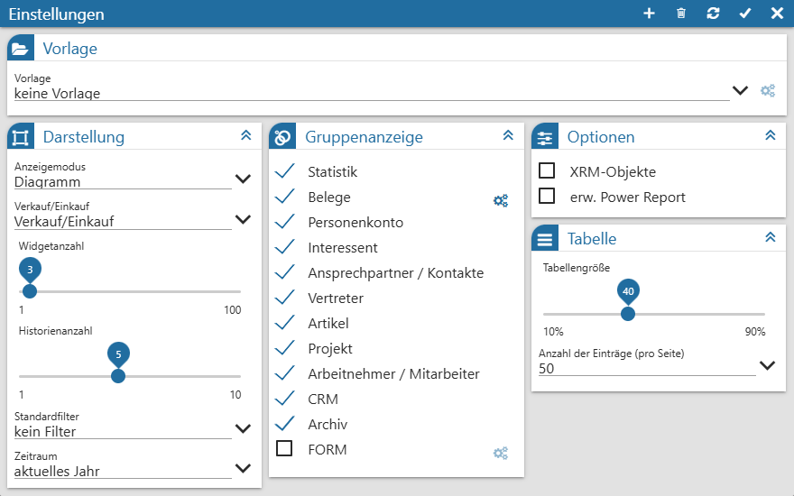
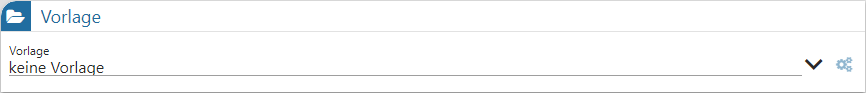
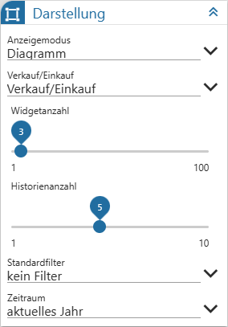
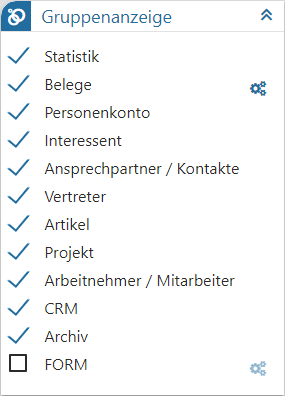
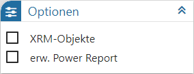
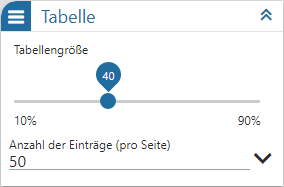

Durch Anwahl des Buttons "Einstellungen" in der Kopfleiste der View 360 können individuelle Einstellung für die Anzeige und das Programmverhalten getroffenen werden.

Folgende Einstellungen stehen zur Verfügung:
Vorlage

Ø Vorlage
Mit Hilfe einer Auswahlliste kann die Vorlage, welche editiert werden soll, ausgewählt werden.
Hinweis
Öffentlich Vorlagen, welche nicht vom aktuellen Benutzer stammen, können nicht ausgewählt bzw. editiert werden.
Ø Vorlagen Verwaltung
Wird eine bestehende Vorlage gewählt, so kann diese durch Anwahl des Icons "Vorlagen Verwaltung" editiert werden.
Hinweis
Das Editieren, welches in der Vorlagen Verwaltung stattfindet, betrifft die folgenden Punkte:
ü Vorlagenname
ü Standardvorlage
ü Veröffentlichen der Vorlage
Alle inhaltlichen Veränderungen werden direkt in den Einstellungen getätigt und durch Anwahl des Buttons "Speichern" abgespeichert.
Anzeige

Ø Anzeigemodus
Mit Hilfe der Auswahl "Anzeigemodus" kann definiert werden, ob die View 360 in Form eines Diagramms oder einer Mindmap dargestellt werden soll.
Ø Verkauf/Einkauf
An dieser Stelle kann hinterlegt werden, ob Belege des Typs "Einkauf", "Verkauf" oder "Ein- und Verkauf" angezeigt werden sollen. Diese Einstellung dient als Standardeinstellung für den Start der View 360.
Ø Widgetanzahl
Mit Hilfe dieses Schiebereglers kann definiert werden, wieviel Einträge pro Objektgruppe dargestellt werden sollen.
Ø Historienanzahl
Durch Anwahl des Icons  in einem Widget wird das entsprechende
Objekt in den Fokus gelegt und das bisherige Ausgangsobjekt in der Historie
gespeichert. Die Anzahl der Historieneinträge kann hier definiert werden.
in einem Widget wird das entsprechende
Objekt in den Fokus gelegt und das bisherige Ausgangsobjekt in der Historie
gespeichert. Die Anzahl der Historieneinträge kann hier definiert werden.
Ø Standardfilter
Der hier hinterlegte Filter beim Start der View 360 automatisch angewendet.
Ø Zeitraum
Mit Hilfe der Auswahl "Zeitraum" kann der Zeitraum ausgewählt werden, in welchem die Bewegungsdaten der View 360-Analyse liegen sollen. Über die Nutzung eines Filters kann die Einstellung übersteuert werden.
Hinweis
Folgende Datumsfelder werden bei dieser Selektion berücksichtigt:
ü Statistik => Rechnungsdatum (T039.C006)
ü Belege => Datum der Erstanlage (T025.C059)
ü Archiv => Erstellungsdatum (T496CMP.C003)
ü CRM => Datum Schritt geschrieben (T170.C005)
Gruppenanzeige

Ø Gruppenanzeige
An dieser Stelle kann hinterlegt werden, welche Objektgruppen in der View 360 berücksichtigt werden sollen. Hierbei sind für die Objekte Belege und FORM weitere Einstellungen notwendig, welche jeweils nach Anwahl des Icons getätigt werden können.
Hinweis
Wurde dem aktuellen Benutzer nicht der Typ "CRM Benutzer" zugeordnet, so steht das Objekt "CRM" nicht zur Verfügung!
Optionen

Ø XRM-Objekte
Bei CRM-Fälle besteht die Möglichkeit über eine XRM-Tabelle sogenannte "Nebenzuordnungen" zu hinterlegen (z.B. mehrere Personenkonten zu einem CRM-Fall). Durch Aktivierung der Option "XRM-Tabelle" werden bei dem Aufbau der View 360 solche Hinterlegungen ebenfalls berücksichtigt.
Ø erw. Power Report
Durch Aktivierung dieser Option werden an den Power Report nicht nur die Daten der Objektgruppen, sondern auch weiterführende Informationen übergeben. Dieses beinhaltet unter anderem die Bezeichnung von Gruppen, Konten oder Kostenstellen / Kostenträger / Kostenarten.
Hinweis
Da sich die Reihenfolge der Felder zwischen normaler und erweiterter Ausgabe grundlegend unterscheidet, erfolgt die Speicherung der Power Report-Vorlage auch Abhängigkeit des hier eingestellten Modus.
Tabelle

In diesem Bereich können Einstellungen für die Tabelle getroffen werden. Diese wird bei einer Tabellen-Ausgabe im rechten Bereich der View dargestellt.
Ø Tabellengröße
Mit Hilfe des hier angebotenen Schiebereglers kann die prozentuale Breite der Tabelle (abhängig von der Breite der WinLine) gewählt werden.
Ø Anzahl der Einträge (pro Seite)
Die Tabelle wird immer in Seiten angezeigt. Wieviel Einträge pro Seite dargestellt werden sollen, kann an dieser Stelle definiert werden.
Buttons
Ø neue Vorlage
Der Button "neue Vorlage" ermöglicht die Speicherung aller getätigten Einstellungen unter einem selbst zu vergebenden Namen. Alle hierfür notwendigen Eingaben werden in dem aufgehenden Fenster Vorlagenanlage getätigt.
Ø Initialisierung
Durch Anwahl dieses Buttons werden die Einstellungen des Fensters auf den Standard zurückgesetzt.
Ø Aktualisierung
Mit Hilfe dieses Buttons werden die Einstellungen gespeichert, direkt angewendet und das Einstellungsfenster bleibt geöffnet.
Ø Speichern
Durch Anwahl des Buttons "Speichern" werden die Einstellungen gespeichert, angewendet und das Fenster geschlossen.
Hinweis
Wurde unter "Vorlage" keine Auswahl getroffen, so wird eine temporäre Vorlage von der WinLine angelegt.
Ø Ende
Durch Anwahl des Buttons "Ende" wird das Einstellungsfenster geschlossen und nicht gespeicherte Änderungen verworfen.